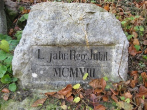
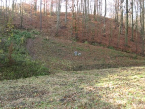
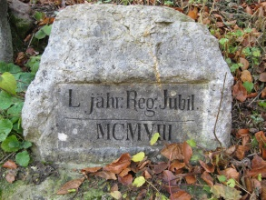
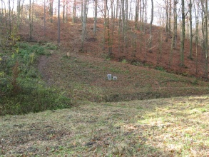

| Lage des Ortes: | nördlich von Brno. |
| Bezirk: | Blansko |
| Herrschaft: | Posořitz (Pozořice) |
| Evidenznummer: | 001a, 001b |
| Abmessungen: | der große Stein - Höhe 68 cm, Breite 49 cm, Stärke 20 cm. |
Beschreibung:
Rechteckiger Gedenkstein aus dem Jahr 1898 trägt folgende lateinische Inschrift:
„Princ Joan Quercetum ad 40. ann Regim. Jubil. 12. Nov. 1898.“
Rechts steht der zweite Stein aus dem Jahr 1908, mit deutscher Inschrift:
„L jähr. Reg. Jubil. MCMVIII“.
Die Steine stehen nicht auf dem ursprünglichen Standort. Das Denkmal stand ursprünglich in der Lokalität der heutigen Straße "Družstevní".
1968 wurden die Gedenksteine auf gegenwärtigen Standort zum Weg zu dem Bahnhof versetzt.
5.11.2010 SO - Zustand nach Renovierung

 



Verweise auf externe Web-Seiten:
http://www.adamov.cz/export/sites/adamov/download/zpravodaj/zpravodaj_1007.pdf - Mitteilungsblat der Gemeinde Adamov (Juli-August 2010).
http://latebra.blog.cz/0909/patrani-po-identite - Foto und kurze Beschreibung.
{kind=link}
{kind=link}
{kind=link}
{kind=link}
{kind=link}
{kind=link}